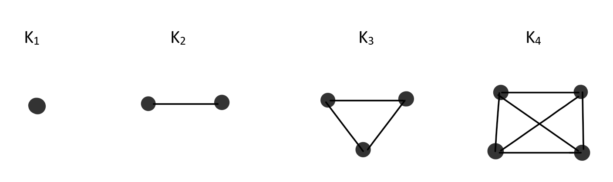
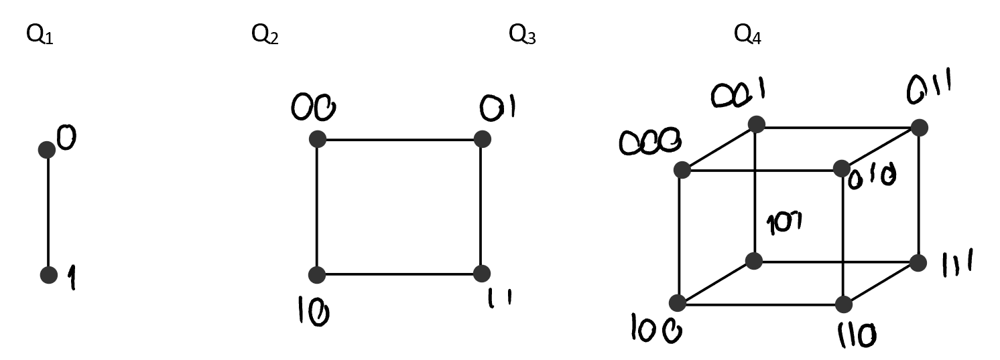
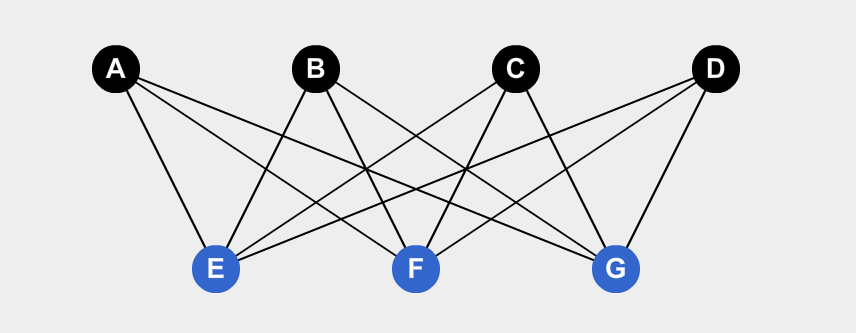

Un grafo G=(V,E) es una estructura matemática que consta de dos conjuntos V y E. Los elementos de V son vértices o nodos y los elementos de E se llaman aristas. Cada arista tiene un conjunto de uno o mas vértices asociados que se llaman extremos (\(V\neq \emptyset\)).

Un grafo es trivial cuando \(\#V=1\) y \(\#E = 0\), es decir, cuando solo hay un punto.
Un grafo es lazo cuando tiene una arista cuyos puntos extremos son coincidentes.

Es una arista que no es un lazo.
Un grado \(G=(V,E)\) es un multígrafo si existen \(a\) y \(b \in V\) con dos o mas aristas incidentes en \(a,b\). En caso contrario se lo llama grafo simple. Es decir, cuando hay dos aristas cuyos vértices son iguales.
A cada arista se la nombra por los vértices, por ejemplo, \(e_1= \{a,b\}\)

Es un grafo donde todas sus aristas son dirigidas (Tienen flechas).
A cada arista se la nombra por los vértices de donde sale y a donde llega, en ese orden. Por ejemplo: \(e_1 = \{a,b\}\) es una arista que sale del vértice \(a\) y llega al vértice \(b\).

De forma similar a los multígrafos no dirigidos, un dígrafo es dirigido cuando hay dos aristas o mas que compartan el mismo vértice de inicio y el mismo vértice de fin.

\(G\) es un grafo podenrado si cada arista tiene un peso asociado. Notacion \(e\in E_G,p(e)\)
Sea \(G\) un grafo ponderado con $a,b \in V_G $, la distancia ponderada es la distancia ponderada minima entre todos los caminos entre \(a\) y \(b\), Es decir, el camino con menor peso de todos los posibles. Notacion: \(dp(a,b)\)
Sea \(c_j\) un camino valido entre \(a,b\), compuesto por vertices \(e_i \in E_G\):
La matriz de incidencia de un grafo \(G\) es la matriz \(I_G\) cuyas filas y columnas son indexadas por algún orden de \(V_G\) y \(E_G\) respectivamente tal que:
Si se trata de un Dígrafo:
PEDIR EJEMPLOS MATRIZ INCIDENCIA
La matriz de adyacencia de un grafo \(G\) es la matriz $A _G$ cuyas filas y columnas son indexadas por algún orden de \(V_G\), tal que:
Si es un dígrafo:
PEDIR EJEMPLOS
El grado de un vértice en un grafo \(G\) denotado \(g(v)\) es el numero de aristas propias incidentes en \(v\) mas el doble del numero de lazos en \(v\).
En un dígrafo se define grado de salida de un vértice \(v\) \(g_s(v)\) al numero de aristas cuya cola esta en \(v\) mas el numero de lazos y el grado de entrada de un vértice \(v\) \(g_e(v)\) al numero de aristas cuya cabeza esta en \(v\) mas el numero de lazos.
[Demostración](Demostraciones\01 - Grafos\Proposicion 01.html)
En un grafo \(G\) la cantidad de vértices de grado impar es par.
[Demostración](Demostraciones\01 - Grafos\Proposicion 02.html)
Todos los vértices tienen el mismo grado. Se llama \(k\)-regular si todos los vértices tienen grado \(k\).
Son grafos simples sin lazos. Todos los vértices son mutuamente adyacentes (\(a\) es adyacente a \(b\) si existe en el grafo \(G\) la arista \(e=\{a,b\}\))
Se los denomina \(\mathbb K_m\), siendo \(m\) la cantidad de vértices.

Son grafos cuyos vértices tienen como máximo 2 conexiones.
Se los denomina \(\mathbb P_n\) siendo \(n\) la cantidad de vértices.
Son grafos en los que cada vértice se conectan con 2 aristas cada uno.
Se los nota como \(\mathbb C _n\) y \(n\) son los vértices.

Son Grafos con 2 vértices y distinta cantidad de aristas entre si.
\(\mathbb D_n\) y \(n\) es la cantidad de aristas.

Estos grafos tienen \(2^n\) vértices. Si los notamos como números binarios, 2 vértices son adyacentes si difieren exactamente en 1 bit. La cantidad de aristas se puede calcular de la siguiente forma:
Se los nota \(Q_n\) y \(n\) es la cantidad de bits con los que pueden ser representados los vértices.

Sea el grafo \(G=(V,E)\) simple y sin lazos, es bipartito si \(V\) = \(V_1 \cup V_2\) u \(V_1 \cap V_2 = \emptyset\). Debe existir una partición donde se cumple con la condición, pero no es necesario que todas las posibles particiones cumplan con la condición para ser bipartito.
Si \(e=\{a,b\} \in E_G \rightarrow a \in V_1 \land b\in V_2\)
La cantidad de aristas se las calcula como \(\#\mathbb K_{m,n} = m + n-1\)
Se los nota como \(\mathbb K_{m,n}\)

En este caso \(V_1=\{A,C,E\}\) y \(V_2 = \{B,D\}\), y \(V_1 \cap V_2 = \emptyset\).
[Demostración](Demostraciones\01 - Grafos\Proposicion 03.html)

Este es un grafo \(\mathbb K_{4,3}\).
Es un grafo ciclo con \(n-1\) vértices mas 1 vértice.
\(W_n = C_{n-1}+ \{v\}\), con \(n\geq 4\)
Se puede ver el grafo \(W_4\)

Un subgrafo de un grafo \(G\) (dirigido o no) es un grafo \(H\), que cumple que \(V_H ⊆ V_G\) y \(E_H \subset E_G\)
\(H\) es un subgrafo recubridor de \(G\) si \(V_G = V_H\)
Sea \(G=(V,E)\) un grafo (dirigido o no). Si \(\emptyset \neq U \subset V\), el subgrafo de \(G\) indicado por \(U\) es el subgrafo cuyo conjunto de vértices es \(U\) y que contiene todas las aristas de \(G\) de la forma:
Sea el grafo \(G\):

Se nota al subgrafo como \(<U_1>\) \(U_1=\{A,B,C\}\) es:

Si v es un vértice de un grafo (dirigido o no) \(G\), entonces \(G−v\) es el subgrafo inducido por el conjunto de vértices \(V_G −{v}\). En general, el resultado de borrar iterativamente todos los vértices de \(U ⊆V_G\) se denota \(G−U\).
Si tengo el siguiente grafo \(G\):

Y le quiero eliminar el vértice \(C\), entonces obtengo el grafo \(G-\{C\}\):

Si e es una arista del grafo (dirigido o no) \(G\), entonces \(G−e\) es el subgrafo cuyo conjunto de aristas es \(E_G −{e}\) y el conjunto de vértices es \(V_G\).
Agregar un vértice \(v\) a un grafo \(G\), donde \(v\) no pertenece a \(V_G\) significa crear un supergrafo denotado \(G \cup\{v\}\) donde el conjunto de es \(V_G\cup{v}\) y el conjunto de aristas es \(E_G\).
Agregar una arista e entre dos vértices \(v\) y \(u\) del grafo \(G\) significa crear un supergrafo denotado \(G\cup{e}\) donde el conjunto de vértices es \(V_G\) y el conjunto de aristas es \(E_G\cup{e}\).
Sean \(G\) y \(H\) dos grafos. Sumando \(G\) y \(H\) se obtiene \(V_{G+H} = V_G\cup V_H\) y EG+H = \(E_G\cup E_H \cup \{e =\{u,v\}: u∈V_G,v ∈V_H\}\).
El complemento de \(G\) (grafo simple sin lazos no dirigido), que se denota \(\overline G\) o \(G^c\) es el subgrafo de \(K_n\) formado por los \(n\) vértices de \(G\) y todas las aristas que no están en \(G\).
Por lo general, \(\#E_G + \#E_\overline G = \#E_{k_n}\)
Sean \(G_1(V_1,E_1)\) y \(G_2(V_2,E_2)\) dos grafos no dirigidos, una función \(f: V_1 \rightarrow V_2\) es un isomorfismo de grafos si:
Cuando existe dicha función \(G_1\) y \(G_2\) son grafos isomorfos. A cada clase de equivalencia se llama tipo de isomorfismo.
Condiciones necesarias para que haya un isomorfismo:
Si \(G_1\) y \(G_2\) son isomorfos, se lo nota como: $G_1 \simeq G_2 $